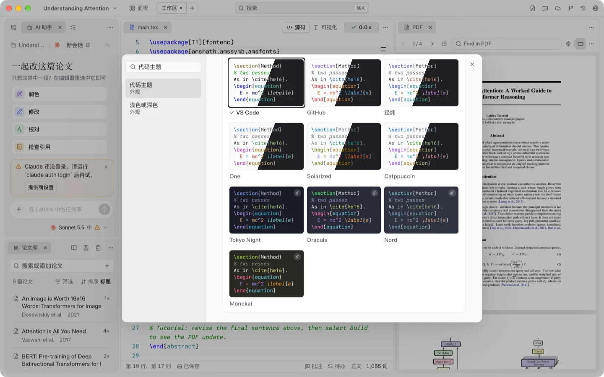

插件与主题
主题
打开 设置 › 外观。在 主题 下：
- 颜色主题 选择浅色、深色或跟随系统。
- 配色 选择 Lattice 自己的配色，或你安装的主题。
- 色调、主题色 和 毛玻璃 调整颜色和窗口的半透明背景。
- 主题文件 里有 浏览主题…（别人发布的主题：点某个主题的 安装，再在 配色 中选中它）、从文件安装…（别人发给你的主题文件）、显示主题文件夹（已安装的主题文件所在的位置）和 移除主题。

代码主题
编辑器的语法配色在同一页的 代码主题 中单独设置。默认是 VS Code（它的 Light+ 和 Dark+ 配色），其他可选的有 GitHub、经纬（Weft & Warp，Lattice 自己的配色）、One、Solarized、Catppuccin、Tokyo Night、Dracula、Nord 和 Monokai。你选过的代码主题会保留；已经用过原生版本的 Lattice 会保留 0.20.0 之前的默认主题 GitHub，直到你另选一个。
浅色或深色 决定显示哪种变体：跟随应用 随应用的外观切换，也可以固定为 浅色 或 深色；只有一种变体的主题会注明。可视编辑器里的代码块和源码文件使用同一个代码主题。已安装的主题如果自带语法配色，会优先于代码主题。

插件
插件会往命令面板（⌘K）里添加命令。每个插件都在沙盒中运行，只能访问你开启时允许的内容。
打开 设置 › 插件。这一页有 已安装 和 浏览 两个视图，共用一个搜索框，搜索当前显示的视图。
浏览插件市场
浏览 列出 Lattice 插件市场中的插件。列表带有签名，被篡改的列表会被拒绝；离线时显示最后一次校验通过的列表。可以按下载最多、最近更新或名称排序，点 刷新 重新获取列表。
点某个插件或它的 安装… 按钮查看详情：作者、版本和许可证、此插件可以 做什么和不能做什么，以及它添加的命令。然后选择：
- 安装并启用：安装插件并开启。
- 仅安装：安装但保持关闭，之后再开启。

已安装的插件
每个已安装的插件都标明来源：来自插件市场的是 已审核，从 URL 安装的是 未经审核，从文件夹安装的是 开发者。用开关开启或关闭插件；开启前会先问你，并列出它将能做什么。需要密钥或令牌的插件会在卡片上为它留一个输入框，并有保存和清除。在插件卡片上可以移除插件。
有更新时，卡片上会提示。全部更新 会应用所有不需要新权限的更新。需要比你已允许的更多权限的更新会单独留在卡片上；查看… 只列出新增的部分，可以选择 允许并更新，或 保留 当前版本（例如「保留 1.2.0」）。
如果某个插件被从市场撤下，Lattice 会将其关闭，并在卡片上说明原因（了解更多）。插件目前只能在 macOS 上运行。
自己安装插件
- 从 URL 安装…：通过
https下载插件的.zip发布包，并核对作者公布的 SHA-256。 - 从文件夹安装…：用于开发插件；Lattice 直接运行这个文件夹，你的修改在下次运行时生效。